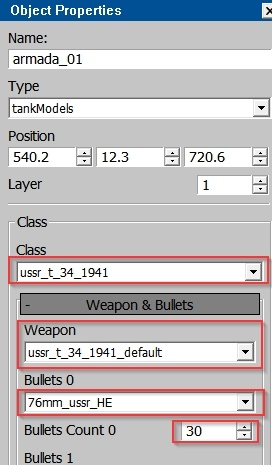
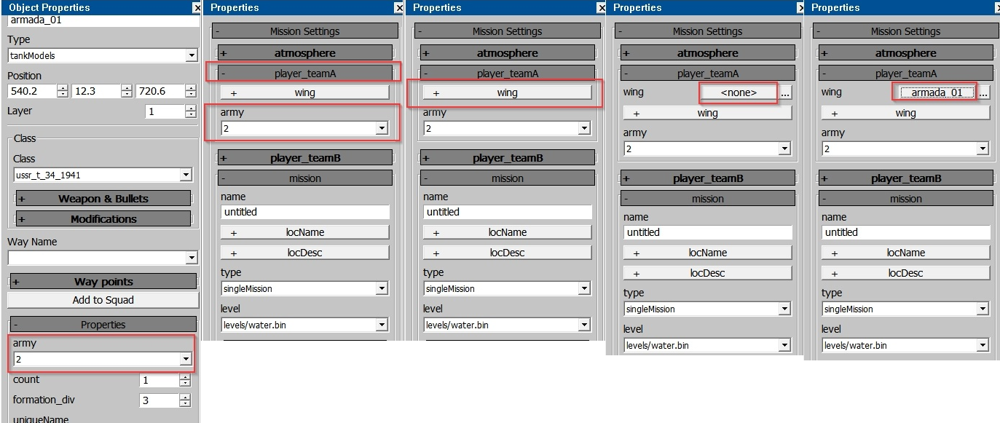
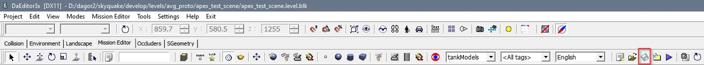

Creating a Mission (War Thunder)
In the War Thunder editor, there is an additional tab called Mission Editor (this tab is not available in daNetGame-based games). Through this tab, you can create a mission to test assets on a specific location.
A key difference between this tab and the Landscape tab is that in the Mission Editor, you’ll be using two property panels:
Mission Properties panel: This is always present in the Mission Editor tab.
Object Properties panel: This can be accessed using the standard P key.
The process for creating a mission is as follows:
Select the Type of Unit:
From the dropdown menu, choose the type of vehicle or unit you want to place:
armada - airplanes;
tankModels - tanks;
ships - ships;
(Other types are non-playable units.)
Place the selected unit on the ground using:
The Create Unit button.
Click on the desired location on the map.

Note
Tanks and ships will be placed on the ground, but planes may not appear to be placed immediately. Zoom out from the map to see the plane high in the sky.
Changing the Unit Type (Optional):
If you initially placed a tank but forgot to select tankModels in the first step, you can still change the unit type in the Object Properties panel by pressing the P key.

Configuring the Unit:
Suppose you placed a tank and moved it to the desired position. Now, you need to configure the following:
Tank model
Weapon (usually set to
default)Ammunition type (typically
defaultorHE)Ammunition quantity
All these settings are adjusted in the Object Properties panel.

Assigning the Unit to an Army:
Check the “army” number assigned to your unit (since this is a PvP game, different factions represent different armies) in the Object Properties panel. Then, specify this army number in the player_teamA field within the Mission Properties panel. After this, assign your unit to the corresponding wing in the same panel.

Setting Up the Mission Properties:
In the Mission Properties panel:
Give your mission a name.
Select singleMission.
Specify the location where the mission should start.

This is crucial – if you skip this step, your units might end up on the default location, which is in the middle of the ocean!
Saving the Mission:
Save your mission to the following directory:
\develop\gameBase\gameData\missions. Make sure to save after any changes, as there is no auto-save feature!
Running the Mission:
Once everything is set up, you can launch the mission.

War Thunder CDK (Content Development Kit)
The War Thunder CDK is a set of tools available to every player for creating user-generated content. You can access the tools for mission creation and more here: War Thunder CDK.